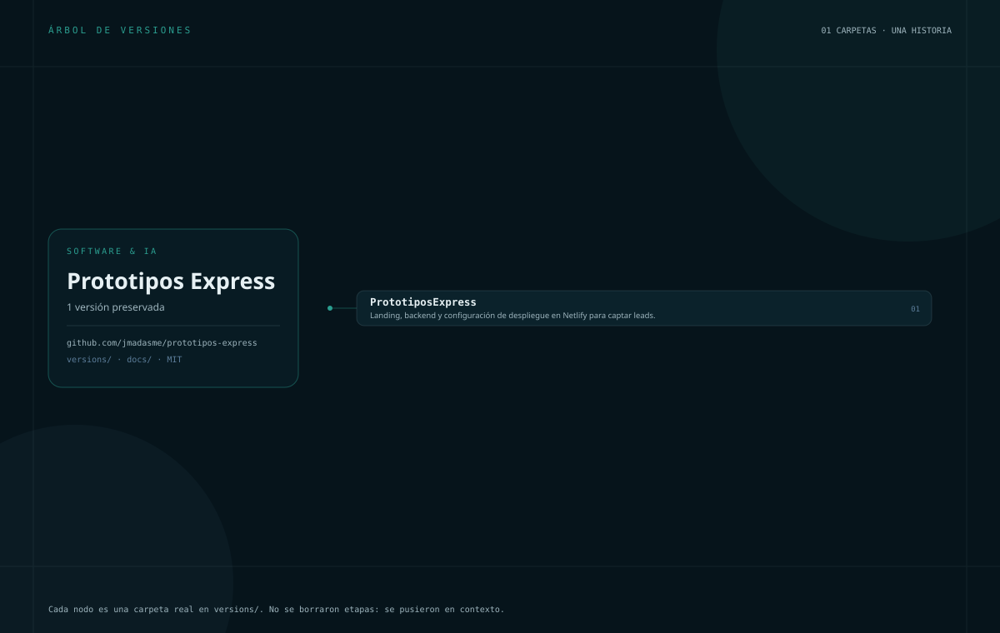

PrototiposExpress
11 archivosLanding, backend y configuración de despliegue en Netlify para captar leads.
Ver carpetaLanding y backend para captar interesados en prototipos gratuitos, desplegable en Netlify.

Sitio de captación para un servicio de prototipos: página de aterrizaje, formulario y backend mínimo. El objetivo es validar demanda antes de construir el producto completo.
Construir el producto completo antes de saber si alguien lo quiere es la forma más cara de equivocarse.
Una landing clara, un formulario y un backend mínimo que permiten medir interés real en días, no en meses.
Una landing para ofrecer prototipos gratuitos, con validación en dos capas y un backend Flask mínimo que envía los leads por correo.
Una landing para ofrecer prototipos gratuitos, con validación en dos capas y un backend Flask mínimo que envía los leads por correo.
Los fragmentos son del código real. Las credenciales SMTP no se incluyen; el .env.example solo muestra nombres de variables.
Cada carpeta conserva una etapa del proyecto. No se borraron las anteriores: se pusieron en contexto.
Landing, backend y configuración de despliegue en Netlify para captar leads.
Ver carpetaPrototipos Express es una landing de captación para un servicio de prototipado rápido de software y hardware. Presenta la propuesta, nueve áreas tecnológicas y un formulario para solicitar una reunión; el producto visible es la página más un backend mínimo que entrega los contactos por correo.
Está destinada a pymes y equipos que necesitan validar una idea antes de financiar un desarrollo completo. Su valor está en el alcance corto: una hipótesis, un formulario y una vía de contacto medible. No es una plataforma de gestión ni un producto terminado; es un instrumento para comprobar demanda con bajo costo y decidir después.
El README original de la versión de referencia, completo.
Landing page profesional para la captura de interesados en servicios de prototipado rapido de soluciones de software y hardware. El sistema permite que un cliente potencial solicite una reunion sin compromiso, detalle su necesidad y plazo deseado, y reciba un prototipo funcional gratuito para testeo. Solo si el prototipo demuestra valor real, el cliente paga por el servicio.
PrototiposExpress es un servicio de prototipado rapido que transforma conceptos e ideas en prototipos funcionales reales de software y hardware, sin costo inicial para el cliente. El equipo esta compuesto por 6 tecnicos altamente capacitados con movilizacion propia y experiencia comprobada en industrias exigentes como casinos, financieras, retail y banca.
La propuesta de valor es simple: el cliente no arriesga nada. PrototiposExpress desarrolla un prototipo funcional, el cliente lo prueba en su entorno real, y solo si encuentra valor tangible, se acuerda un modelo de pago justo.
El servicio opera bajo un modelo de captura de necesidad - prototipado - testeo gratuito - pago por valor:
Solicitud de reunion
|
v
Captura de necesidad y deadline
|
v
Desarrollo de prototipo funcional (sin costo)
|
v
Periodo de pruebas sin compromiso
|
v
Si hay valor real -> Pago por servicio
Si no hay valor -> Sin costo, sin compromiso
PrototiposExpress abarca 9 areas tecnologicas para cubrir practicamente cualquier necesidad de prototipado:
| Categoria | Tecnologias | Aplicaciones tipicas |
|---|---|---|
| Web | Frontend + Backend (HTML, CSS, JavaScript, Python, etc.) | Aplicaciones web completas, paneles de control, portales |
| Escritorio Windows | .exe, .msi, .NET, C++ | Programas nativos Windows con interfaz grafica profesional |
| Escritorio Linux (Debian) | GTK, Qt, Python, aplicaciones nativas | Software para distribuciones Debian y derivadas (Ubuntu, Mint) |
| Servicios / APIs | Flask, REST, microservicios, procesos background | APIs REST, automatizacion, integracion de sistemas |
| Hardware WiFi | ESP32, ESP8266 | IoT, sensores inalambricos, domotica, monitoreo remoto |
| Bluetooth / BLE | HC-05, HC-06, nRF, BLE | Comunicacion inalambrica de corto alcance, beacons, perifericos |
| LoRa | SX127x, Heltec, LPWAN | Comunicacion de largo alcance y bajo consumo, sensores remotos |
| Ethernet | Conexion por cable, servidores embebidos | IoT industrial, sistemas criticos, comunicacion cableada |
| Radiofrecuencia | 433 MHz, 315 MHz, nRF24L01 | Telemetria, control remoto, sensores inalambricos de bajo costo |
El proyecto es un sitio 100% estatico (HTML + CSS + JS plano) optimizado para Netlify. El formulario de contacto utiliza Netlify Forms, que captura los datos automaticamente y los entrega via notificacion por email sin necesidad de backend.
+------------------------------------------------------------------+
| NETLIFY (Hosting + Forms) |
| |
| https://prototiposexpress.netlify.app/ |
| | |
| GET / ---------> frontend/index.html (Landing page) |
| GET /css/* -----> styles.css (Estilos y animaciones) |
| GET /js/* ------> main.js (Logica de cliente) |
| | |
| POST / (Form AJAX) ---> Netlify Forms captura los datos |
| | y envia notificacion email |
| +------------------------------------------------------------+ |
| | Frontend: | |
| | - Landing page profesional | |
| | - Formulario de contacto con validacion en tiempo real | |
| | - Animaciones de scroll con Intersection Observer | |
| | - Diseño responsive (320px a 1920px+) | |
| | - Navegacion suave entre secciones | |
| | - Envio AJAX a Netlify Forms | |
| +------------------------------------------------------------+ |
+------------------------------------------------------------------+
|
Netlify Forms (notificacion email)
|
+------------------------------v------------------------------------+
| CORREO DESTINO |
| |
| jmadasme@gmail.com |
| (configurable desde dashboard Netlify) |
+------------------------------------------------------------------+
Nota: Localmente, el formulario envia los datos a Netlify Forms solo cuando el sitio esta desplegado en Netlify. Para desarrollo local, el formulario mostrara un mensaje de confirmacion simulado (ver seccion de Ejecucion Local).
fetch POST /api/contacto con un JSON que contiene {nombre, email, telefono, empresa, necesidad, plazo}.{"status": "ok"} en caso de exito, o {"status": "error", "message": "..."} en caso de error.Abre la pagina web de PrototiposExpress en tu navegador. La pagina se carga con un diseno moderno y oscuro, con navegacion superior fija.
Navega por las secciones para entender como funciona el servicio, que tecnologias ofrecemos y en que industrias tenemos experiencia: - Como funciona: Explica el pipeline de 5 pasos. - Tecnologias: Muestra las 9 areas tecnologicas que dominamos. - Industrias: Sectores donde tenemos experiencia comprobada. - Equipo: Informacion sobre los 6 tecnicos. - Por que nosotros: Diferenciadores clave.
Desplazate hasta la seccion "Solicita tu reunion" (o haz clic en el boton "Solicitar reunion" en el menu de navegacion). Completa el formulario con:
Haz clic en "Enviar solicitud". Recibiras una confirmacion visual en la pagina indicando que tu solicitud fue enviada con exito. El equipo de PrototiposExpress te contactara en un maximo de 24 horas para agendar una reunion sin compromiso.
Tras la reunion, el equipo analizara tus requerimientos y desarrollara un prototipo funcional. Recibiras el prototipo para pruebas sin ningun costo inicial.
Un cliente del sector agricola necesita monitorear la temperatura de sus invernaderos en tiempo real:
Un retail necesita una aplicacion Windows para gestionar inventario en local:
Una fintech necesita una API para procesar pagos:
| Navegador | Version minima | Estado |
|---|---|---|
| Google Chrome | 60+ | Compatible |
| Mozilla Firefox | 55+ | Compatible |
| Microsoft Edge | 79+ | Compatible |
| Apple Safari | 12+ | Compatible |
El backend utiliza Gmail SMTP para enviar los correos. Es necesario configurar una contraseña de aplicacion de Gmail, ya que Google no permite el uso de la contraseña normal de la cuenta para accesos SMTP desde aplicaciones externas.
jmadasme@gmail.com).abcd efgh ijkl mnop). Copiala inmediatamente porque no se mostrara de nuevo.Crea un archivo .env en la carpeta backend/ con el siguiente contenido:
SMTP_USER=jmadasme@gmail.com
SMTP_PASS=abcd efgh ijkl mnop
Reemplaza los valores con tu correo y la contraseña de aplicacion generada.
Nota: Si usas otro correo como remitente, tambien puedes configurar el destinatario:
SMTP_USER=tu_correo@gmail.com
SMTP_PASS=tu_contraseña_de_aplicacion
TO_EMAIL=jmadasme@gmail.com
La forma mas rapida de poner el sitio en produccion.
netlify.toml):
- Publish directory: frontend
- Build command: ninguno (es HTML/CSS/JS plano)frontend/ al area de upload en app.netlify.com/drop.Una vez desplegado:
contacto.En Site settings → Domain management puedes configurar un dominio propio.
El sitio es 100% estatico, por lo que puedes servirlo con cualquier servidor HTTP simple:
cd proyectos/PrototiposExpress/frontend
python3 -m http.server 8000
# Abrir http://localhost:8000
Con la extension Live Server, hacer clic derecho en index.html → "Open with Live Server".
Si deseas probar el envio de correos localmente con el backend Flask:
cd proyectos/PrototiposExpress/backend
python3 -m venv venv
source venv/bin/activate
pip install -r requirements.txt
cp .env.example .env
# Editar .env con SMTP_USER y SMTP_PASS
python app.py
# Abrir http://localhost:5000
Nota: Cuando usas el backend Flask, debes cambiar el fetch en
main.jsa'/api/contacto'para que funcione localmente (en lugar del endpoint de Netlify Forms).
proyectos/PrototiposExpress/
├── README.md <- Este archivo
├── PLAN.md <- Plan original del proyecto
├── AUDIT_REPORT.md <- Informe de auditoria de codigo
├── netlify.toml <- Configuracion de deploy en Netlify
├── frontend/
│ ├── index.html <- Landing page (estructura HTML)
│ ├── css/
│ │ └── styles.css <- Estilos CSS (responsive, animaciones)
│ └── js/
│ └── main.js <- Logica frontend (navegacion, formulario, animaciones)
├── backend/ <- Backend Flask (solo para desarrollo local)
│ ├── app.py <- Servidor Flask (frontend + API)
│ ├── requirements.txt <- Dependencias Python
│ ├── .env.example <- Plantilla para variables de entorno
│ └── .env <- Variables de entorno (NO SUBIR A GIT)
└── docs/
├── datasheet.md <- Documentacion de usuario y preguntas frecuentes
└── developer.md <- Documentacion tecnica para desarrolladores
.env a repositorios publicos o compartas las credenciales SMTP..env contiene la contraseña de aplicacion de Gmail, que permite enviar correos desde tu cuenta..env en backend/.env (ya esta incluido en .gitignore si configuras el repositorio adecuadamente)..env en entornos productivos a menos que esten correctamente protegidos.Este proyecto es de codigo abierto. Todos los derechos reservados 2026 PrototiposExpress.
Las primeras versiones existen para que estos errores no se repitan: cada una dejó una decisión de diseño verificable.
El formulario envía a Netlify Forms mediante fetch a la raíz del sitio, de modo que solo confirma envíos cuando la página está desplegada en Netlify. El backend Flask existe, pero el README indica cambiar a mano la URL a /api/contacto para probarlo localmente. Se mantuvo el sitio estático y el backend como alternativa de desarrollo.
Los datos del formulario no se guardan en una base: se envían por correo y quedan solo en la bandeja de destino. El README descarta autenticación, cuentas y persistencia, así que no hay forma de consultar, deduplicar ni medir leads desde el sitio. La limitación es explícita y acota el uso a validación inicial.
El envío real depende de una cuenta de Gmail con verificación en dos pasos y una contraseña de aplicación configurada en variables de entorno. Sin SMTP_USER y SMTP_PASS, el backend responde con error de configuración. El servidor Flask se declara solo para desarrollo y no se despliega en Netlify.
Seis criterios con la misma escala en todo el catálogo, para comparar sin marketing.
No. Es una landing de validación con backend mínimo.
Se puede desplegar en otro hosting; la configuración incluida es para Netlify.
Al destino configurado en las variables de entorno. No hay base de datos incluida.
Sí, es la parte que más conviene iterar.
No. No maneja cuentas.
Usá esta familia como base para prototipos express. Está documentada para que puedas entenderla, ejecutarla y continuarla sin adivinar.